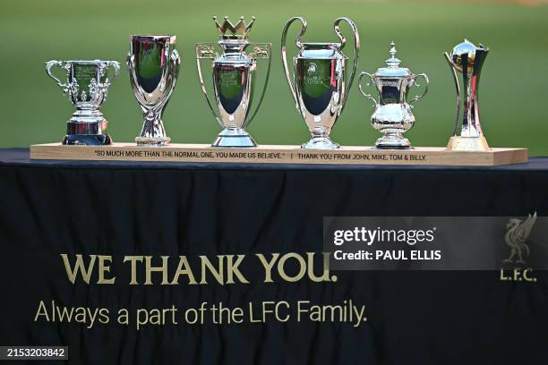

The club has won nineteen league titles, eight FA Cups, a record ten League Cups and sixteen FA Community Shields. In international competitions, the club has won six European Cups, three UEFA Cups, four UEFA Super Cups—all English records—and one FIFA Club World Cup
Liverpool is the most successful British club in international football with fourteen trophies, having won the European Cup/UEFA Champions League (UEFA's premier club competition) six times, an English record that is only surpassed by Real Madrid and A.C. Milan.
